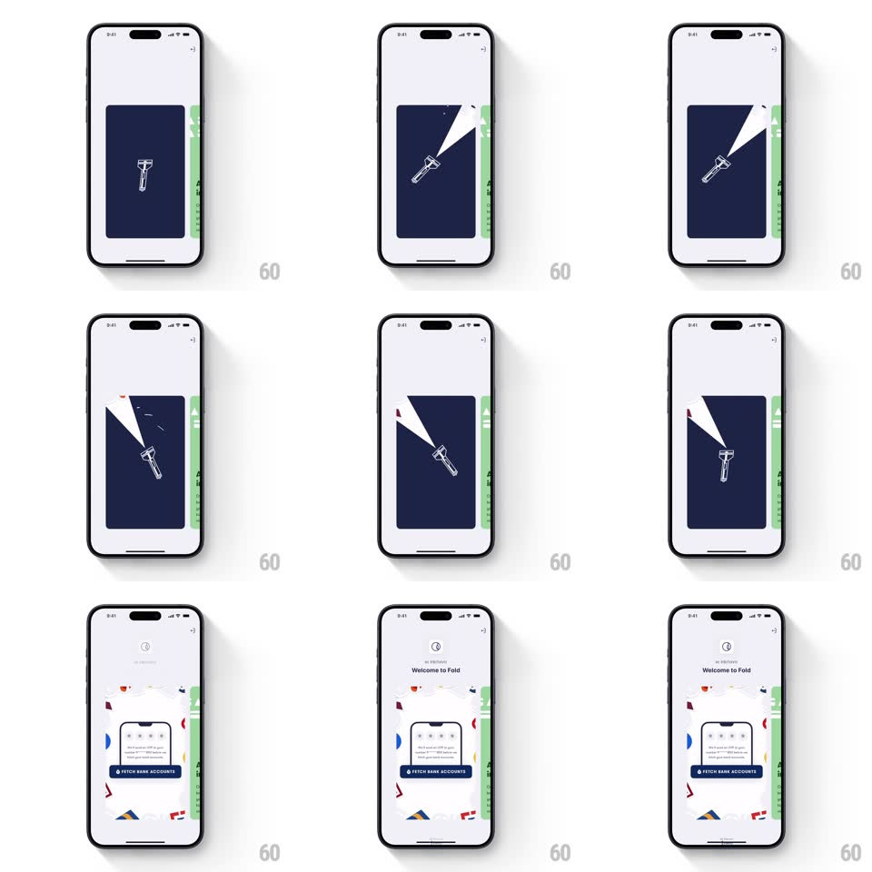

Media
Frame-by-frame

Rebuild this interaction 1:1: Fold's fetch-accounts card reveal - a navy card with a flashlight illustration sweeps its beam across the dark, then the whole card shrinks and springs into the "Welcome to Fold" main card (phone illustration, confetti shapes, FETCH BANK ACCOUNTS button) with a staggered reveal.

Rebuild this interaction 1:1: Fold's fetch-accounts card reveal - a navy card with a flashlight illustration sweeps its beam across the dark, then the whole card shrinks and springs into the "Welcome to Fold" main card (phone illustration, confetti shapes, FETCH BANK ACCOUNTS button) with a staggered reveal. ## Integration Integration: stack-agnostic spec - springs given as stiffness/damping, timed motions as duration + curve; map every value to your framework and animation library of choice. ## Scene Card 1: dark navy rounded card, a white line-art flashlight at center emitting a light cone. Card 2 (main): white card with a phone illustration showing OTP fields, a dark "FETCH BANK ACCOUNTS" pill, confetti shards scattered around, under a "Welcome to Fold" header. ## Motion spec Pattern: flashlight sweep, then card-morph reveal. - The flashlight rotates slowly (-25deg to +25deg, 1.6s, ease-in-out, 2 sweeps), its cone lighting the navy card - the "searching" metaphor plays out fully once. - On the last sweep the beam flares (opacity spike + cone widens 20%, 250ms), then the navy card shrinks toward center (scale 1 -> 0.6 + fade, 350ms, ease-in). - The main card springs up in its place (scale 0.8 -> 1, translateY 30 -> 0, spring ~330/17 - one confident bounce). - Contents stagger: confetti shards pop in around the edges (scale 0 -> 1, spring ~420/16, random 40-120ms delays), the phone illustration rises (fade + 16px, 300ms), then header, copy, and the FETCH button last (200ms fades, 80ms apart). - The button's leading icon pulses gently (scale 1 -> 1.1, 1.4s) until tapped. ## Calibration - One full flashlight performance before the reveal - cutting it short loses the story. - The confetti is asymmetric - shards scattered, not ringed. ## Reduced motion Flashlight holds static; cards crossfade; no confetti pops. ## Don't miss - The shrink-to-spring handoff is overlapping (new card starts at 70% of the old one's exit) - no dead frame between them. - The navy card is a stage, not a screen - everything happens inside the card's bounds.